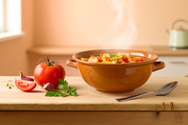

A week of meals is far easier to manage when it is written down before you shop. Choose three evening meals that share ingredients, cook a double portion of one of them, and carry the second portion into the next day as lunch.
Leave one evening open for whatever is still in the fridge. That single habit removes most of the waste at the end of the week, and it removes the decision you are least able to make on a Thursday evening.